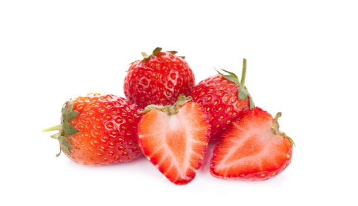
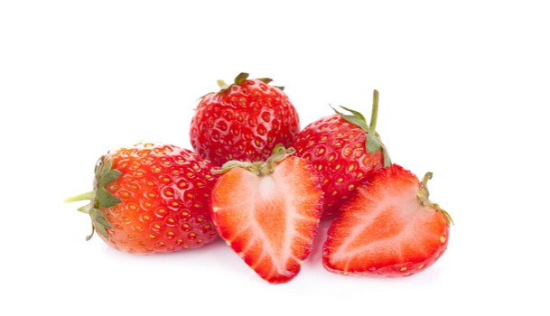
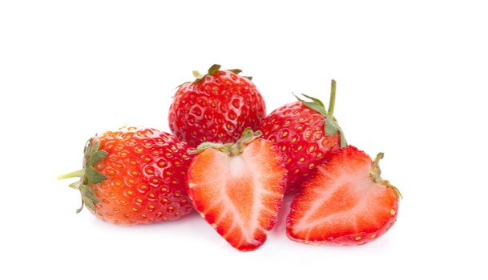

關於我們
特色果甘
客製禮盒
客製果甘
折扣遊戲
果甘話區
商品詳情

天然草莓甘
4.0
基本介紹：草莓成熟後的果實富含有糖、蛋白質、粗纖維；其中維生素A也特別高，超過了橘子、芒果；還含有礦物質、蛋白質、鈣、磷、鐵等營養成分。
售價:
340點
放入購物車
直接購買
上一筆產品：香蕉
下一筆產品：芭樂
觀看評價
Peggy1001於 2020.02.26 23:40 發表評價：我覺得這款果甘不錯吃，有點甜，又不會太甜，下次還會再買。
檢舉
Ted1001於 2020.02.24 08:10 發表評價：我覺得這款果甘不錯吃，但分量有點太少。
檢舉
Eric0101於 2020.02.20 23:40 發表評價：還有客製化禮盒，這個我最喜歡的。
檢舉
Hellen1001於 2020.02.16 13:40 發表評價：我覺得這款果甘不錯吃，有點甜，又不會太甜，下次還會再買。
檢舉
Peggy1001於 2020.02.26 23:40 發表評價：我覺得這款果甘不錯吃，有點甜，又不會太甜，下次還會再買。
檢舉
Ted1001於 2020.02.24 08:10 發表評價：我覺得這款果甘不錯吃，但分量有點太少。
檢舉
Eric0101於 2020.02.20 23:40 發表評價：還有客製化禮盒，這個我最喜歡的。
檢舉
Hellen1001於 2020.02.16 13:40 發表評價：我覺得這款果甘不錯吃，有點甜，又不會太甜，下次還會再買。
檢舉
 商品詳情
商品詳情
 
